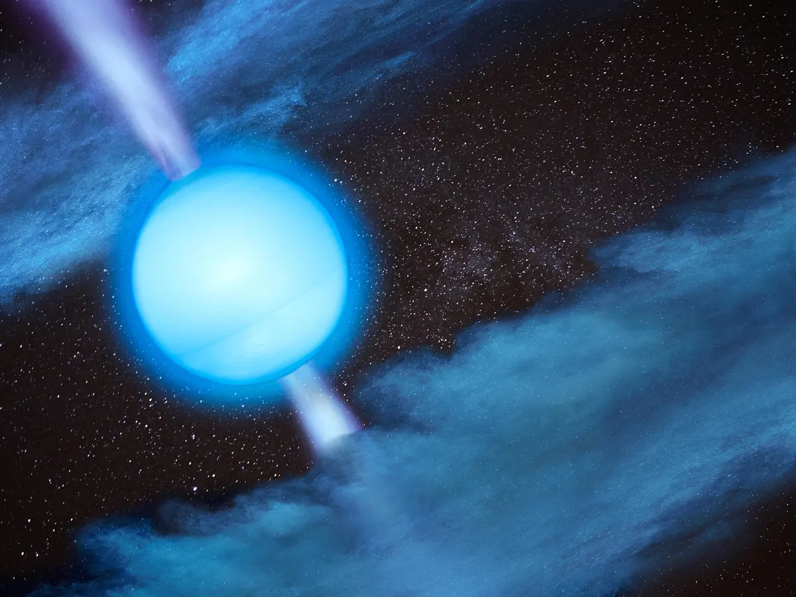

Space - place full of misteries
The cosmos has always fascinated people. Since ancient times, philosophers, astronomers, and other scholars have been interested in what lies beyond Earth. They gazed at the stars, conducted calculations, described planets, and named them. An example of this is Mars, which was first observed through a telescope in 1610 by Galileo.
In present times, scientists have many more technologies at their disposal, enabling us to see farther and discover new planets, stars, and even entire galaxies located tens or hundreds of thousands of light-years away from us. However, there are objects that possess extraordinary properties and differ from the planets and stars we have known for a long time. These objects captivate astronomers and researchers worldwide, who collaborate to uncover their properties and origins.
Neutron star